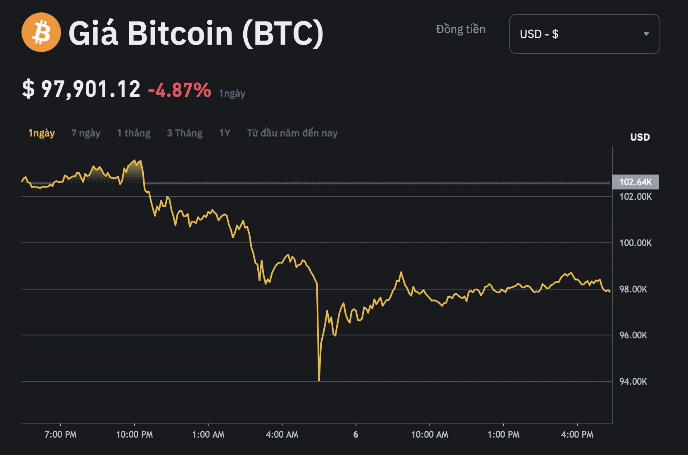

Trong vòng 3 phút, Bitcoin đột ngột giảm giá 10% từ 98.000 USD xuống 92.000 USD khiến hàng tỉ USD của người chơi tiền số bị thanh lý trong 24 giờ qua. (Bao gồm cả tôi - người đang viết đống html này)
Một ngày sau khi Bitcoin lập đỉnh cao nhất mọi thời đại, vượt ngưỡng 100.000 USD mỗi token, 5 giờ 25 sáng 6.12 (giờ Việt Nam), tiền số giá trị nhất thế giới bất ngờ lao dốc, khiến hàng trăm nghìn người rơi vào cảnh "cháy tài khoản".
Cú sập lịch sử của Bitcoin
Trong bài đăng trên X, nhà giao dịch tiền số Smiley Capital nói lần điều chỉnh giá sáng nay của Bitcoin "thực sự đi vào lịch sử". Ông viết: "Bitcoin giảm 10% trong vòng 3 phút, tương đương với mức giảm khoảng 200 tỉ USD giá trị vốn hóa". Như vậy trung bình cứ mỗi giây, Bitcoin mất 1,1 tỉ USD giá trị.
Diễn biến giá Bitcoin vào ngày 6.11.2024
Hiện tại, giới phân tích vẫn chưa đưa ra lý giải rõ ràng về cú sập đột ngột của Bitcoin sau khi đạt đỉnh 104.000 USD. Tony Sycamore, chuyên gia phân tích thị trường của IG cho rằng lần điều chỉnh mạnh này có thể khiến giá Bitcoin đi ngang trong ngắn hạn. "Chúng tôi không cho rằng đây là điểm kết thúc của đợt tăng giá Bitcoin nhưng nó báo hiệu thị trường đang bước vào giai đoạn củng cố vị thế cho những tuần tiếp theo", Sycamore viết trên X cá nhân.